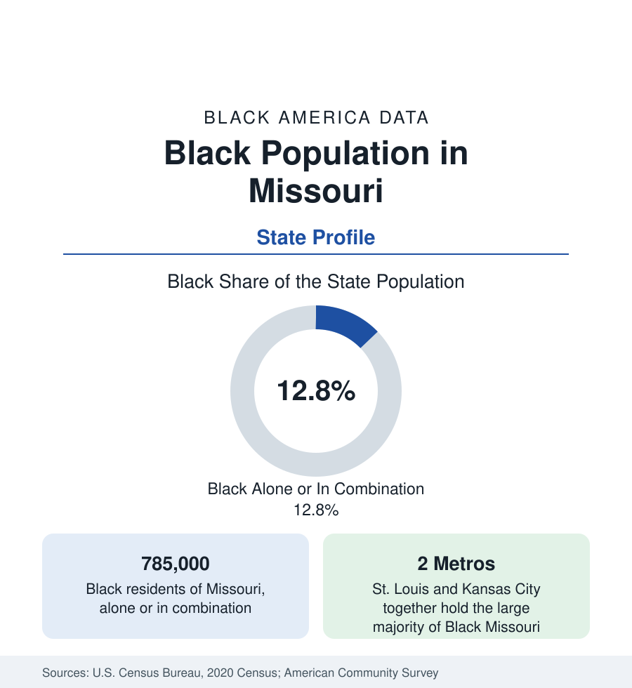

Black Census
Black Population in Missouri: Between St. Louis and Kansas City
About 785,000 Black Missourians — nearly one in eight residents — anchored by two great river metros at the state's two ends. The census profile.

Missouri holds about 785,000 Black residents — Black alone or in combination — nearly one in eight of its people, with Black alone at about 700,000, or 11 percent. Missouri entered the Union as a slave state under the Compromise that bears its name, and its Black population has always been a tale of two cities: St. Louis on the Mississippi, one of the great Black metropolises of the migration era, and Kansas City on the Missouri, the jazz-age center of the plains. Together they hold the large majority of Black Missouri; between them lies a state where Black settlement thins to the river counties of the Bootheel. This article profiles the population.
St. Louis: The Eastern Anchor
The St. Louis region holds Missouri's largest Black population: the independent City of St. Louis is more than two-fifths Black — about 130,000 people within a city of 300,000 — and the metropolitan total, reaching across the river to East St. Louis and the Illinois shore profiled in that state's account, exceeds half a million. The city's Black community is among the migration era's foundational: steamboat and rail labor, then the stockyards and factories, built neighborhoods from the Ville — the historic center of Black education and professional life, home to Sumner High School, the first Black high school west of the Mississippi — to the north side's vast districts. The modern data record the familiar contraction: the city's population has fallen by more than half from its 1950 peak, its Black population suburbanizing into St. Louis County's north municipalities (Ferguson, Florissant, Hazelwood, and University City among them) at every income level.
Kansas City: The Western Anchor
Kansas City, Missouri, is more than a quarter Black — about 140,000 people — with a Black community centered historically on the east side around 18th and Vine, the jazz district whose clubs made the city a music capital in the territory-band era, and the Paseo corridor. The metro's Black population spreads across both state lines (Kansas City, Kansas, holds its own large Black community in Wyandotte County) and into the Missouri suburbs of Independence, Raytown, and Grandview. Kansas City's Black institutions — its churches, its historically Black business districts, its school-desegregation history — parallel St. Louis's at a slightly smaller scale, and its Black median income in the metro data runs somewhat stronger, reflecting the metro's overall growth.
The Bootheel and Little Dixie
Rural Black Missouri concentrates in two bands. The Bootheel, the state's southeastern appendage in the Mississippi Delta's northern reach, holds plantation counties — Pemiscot, Mississippi, New Madrid, Dunklin — where Black shares run from a fifth to above a third and the data carry the Delta's signature. North of the Missouri River, the counties of 'Little Dixie' along the river's central corridor — settled by Kentucky and Virginia slaveholders and named for their Southern culture — retain Black populations from the tobacco and hemp era, around Columbia (a university city roughly a tenth Black) and the river towns. The Ozarks and the northern plains record small shares, in many counties under 2 percent.
Institutions and Indicators
Missouri's Black education layer is anchored by Lincoln University in Jefferson City — a public HBCU founded by Black Civil War soldiers' contributions, one of the nation's most distinctive founding stories — and Harris-Stowe State University in St. Louis, with the two metros' universities carrying the larger enrollments. The state's Black indicators sit near the border-state pattern: income below national Black averages with the two metros a few points apart in profile, attainment rising in the suburbs, health outcomes at the difficult end in both the St. Louis districts and the Bootheel — a state whose averages are, once again, the sum of two metros and a Delta.
Reading the Missouri Numbers
Springfield, the state's third city in the Ozarks, holds a Black population of roughly 4 percent — a small community with a documented history reaching to the city's founding era.
Missouri is the two-anchor state of this section: read it as St. Louis and Kansas City first, the Bootheel second, and the state average last. Its 785,000 Black residents make it one of the larger Black populations of the interior, and its two cities' profiles in this section carry the metropolitan detail.
More in Black Census
The Black Population of the United States: Size, Definitions, and Distribution
The Black population of the United States totals 52.8 million — 15.4 percent of the nation. How the Census Bureau defines and counts the population, and where it lives.
Black Median Household Income in the United States
Black median household income stands at $56,490 in the Census Bureau's annual income report — how the figure is measured, how it compares, and what drives it.
The Black Poverty Rate: Levels, Children, and the Long Trend
The official Black poverty rate is 17.1 percent — against 11.1 percent nationally and 7.7 percent for non-Hispanic White Americans. How poverty is measured and what the data show.
Source: U.S. Census Bureau, 2020 Census; American Community Survey; Population Estimates Program.